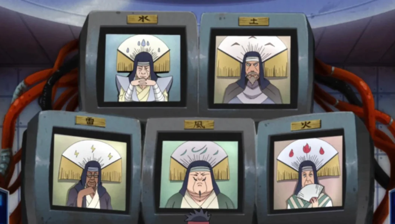

SISTEMA DE DAIMYŌ

Você nasceu em berço de ouro. Dos muros altos do seu castelo, a guerra lá fora é apenas um jogo de xadrez onde os outros são suas peças.
Enquanto outros treinam jutsus, você domina o destino das nações através do ouro e da estratégia. Você não luta no campo de batalha; você compra a vida de quem luta nele.
- Controle orçamentos nacionais, dite leis por Decretos e tenha os Kages na palma da sua mão.
- Crie Monopólios, gerencie suprimentos e decida quem prospera ou quem passa fome.
- Use o Mercado Negro para contratar mercenários e o sistema de Espionagem para manipular o mundo sem sujar as mãos.
- Construa infraestruturas, desenvolva tecnologias e transforme sua Dinastia na mais rica do RPG.
CONTROLE POLÍTICO & DECRETOS
- Sufocamento de Kages Aprovar uma lei cortando 50% da verba militar da Vila Oculta caso o Kage tome uma decisão contrária aos interesses da sua Dinastia.
- Festivais de Ostentação Decretar um "Festival Nacional da Primavera", obrigando as Vilas Ocultas a enviarem seus melhores ninjas para competirem apenas para o entretenimento e apostas dos nobres.
- Inquisição Fiscal Criar uma lei que taxa o uso de jutsus específicos ou a posse de Kekkei Genkais, forçando clãs inteiros a pagarem tributos à sua Casa.
- Fechamento de Fronteiras Decretar "Estado de Sítio", impedindo a entrada de estrangeiros e travando o comércio de um país inteiro com uma única assinatura.
- Casamentos Políticos (Reféns) Forjar alianças enviando (ou exigindo) membros da família como "convidados de honra" em castelos aliados para garantir que tratados de paz não sejam quebrados.
GUERRA ECONÔMICA & MONOPÓLIOS
- Embargo da Fome Bloquear rotas de suprimentos agrícolas para um país inimigo, forçando uma rendição por fome antes mesmo de uma guerra estourar.
- Monopólio de Guerra Comprar todas as minas de ferro ou estaleiros do país, ditando o preço de espadas e navios. Se alguém quiser guerra, terá que comprar as armas de você.
- Inflação Artificial Reter propositalmente recursos essenciais (como água no País do Vento ou remédios) nos seus cofres para fazer o preço explodir no mercado e lucrar com a crise.
- Agiotagem de Estado Emprestar quantias colossais de Kigens para um país vizinho que está perdendo uma guerra. When eles não puderem pagar, você cobra a dívida tomando portos ou terras deles.
O SUBMUNDO & MANIPULAÇÃO
- Contratos de Extermínio Usar o Mercado Negro para contratar Nukenins (renegados) de Rank-S para assassinar o herdeiro de uma Casa rival, mantendo as mãos limpas.
- Guerra por Procuração Financiar secretamente facções rebeldes ou mercenários dentro de um país aliado para desestabilizá-lo e depois oferecer "ajuda financeira" em troca de terras.
- Chantagem Soberana Usar a rede de Espionagem para descobrir o diário de um conselheiro ou a traição de um líder de clã, usando a informação para transformá-los em seus fantoches.
- Leilão Proibido Organizar leilões no Mercado Negro para vender Pergaminhos Proibidos de Jutsus ou artefatos roubados para quem pagar mais alto.
INFRAESTRUTURA E TECNOLOGIA
- Concursos Tecnológicos Patrocinar o "1º Grande Torneio de Invenções Bélicas", oferecendo montanhas de ouro para atrair os melhores engenheiros e cientistas para trabalharem exclusivamente para sua Dinastia.
- Anexação por Infraestrutura Construir estradas, ferrovias ou portos em vilarejos neutros ou menores. Aos poucos, você cobra pedágios tão altos que o vilarejo se vê obrigado a jurar lealdade à sua Casa para sobreviver (anexação econômica).
- Cofres Impenetráveis Financiar a construção de abrigos subterrâneos e fortalezas que nem mesmo Bijuudamas conseguiriam destruir, garantindo que sua linhagem sobreviva a qualquer guerra ninja.
- A "Corrida Armamentista" Financiar o desenvolvimento de uma nova tecnologia de comunicação (rádios) ou transporte, e depois licenciar o uso para outros países cobrando taxas absurdas mensais.